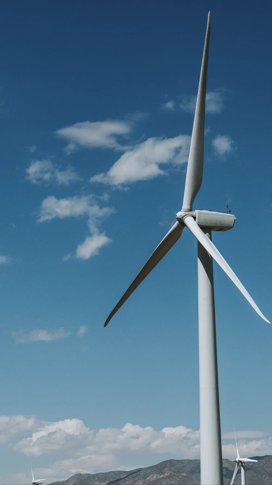

C. MATÍAS
F.O.
ES
EN
↓
→
Reporting Designer
EY
accenture
pwc
BID
BBVA
Santander
Eversheds Sutherland
mazars
FTI Consulting
ferrovial
Santa Cruz
Microsoft
Philip Morris Spain
CBRE
+10
+150

1
2
3
Email
mfo.gds@gmail.com
WhatsApp
+34 662 357 233
←
×
→